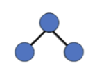
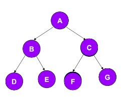

Un árbol binario es una estructura de datos en la cual cada nodo siempre tiene cero hijos, un hijo o un hijo izquierdo y un hijo derecho. No pueden tener más de dos hijos (de ahí el nombre ‘Binario’). Si algún hijo tiene como referencia a null, es decir que no almacena ningún dato, entonces este es llamado un nodo externo. En el caso contrario el hijo es llamado un nodo interno.

Los recorridos se clasifican de acuerdo al momento en que se visita la raíz del árbol y los subárboles izquierdoyderecho. Existen tres recorridos:
Recorrido en Preorden: consiste en primer lugar, examinar el dato del nodo raíz, posteriormente se recorrer el subárbol izquierdo en preorden y finalmente se recorre el subárbol derecho en preorden. Esto significa que para cada subárbol se debe conservar el recorrido en preorden, primero la raíz, luego la parte izquierda y posteriormente la parte derecha.

Recorrido: A, B, D, E, C, F, G
Recorrido en Inorder: consiste en primer lugar en recorrer el subárbol izquierdo en Inorden, luego se examina el dato del nodo raíz, y finalmente se recorre el subárbol derecho en Inorden. Esto significa que para cada subárbol se debe conservar el recorrido en Inorden, es decir, primero se visita la parte izquierda, luego la raíz y posteriormente la parte derecha.
Recorrido en Postorden: consiste en primer lugar en recorrer el subárbol izquierdo en Postorden, luego serecorre el subárbol derecho en Postorden y finalmente se visita el nodo raíz. Esto significa que para cada subárbol se debe conservar el recorrido en Postorden, es decir, primero se visita la parte izquierda, luego la parte derecha y por último la raíz.
Recorrido: D, E, B, F, G, C, A